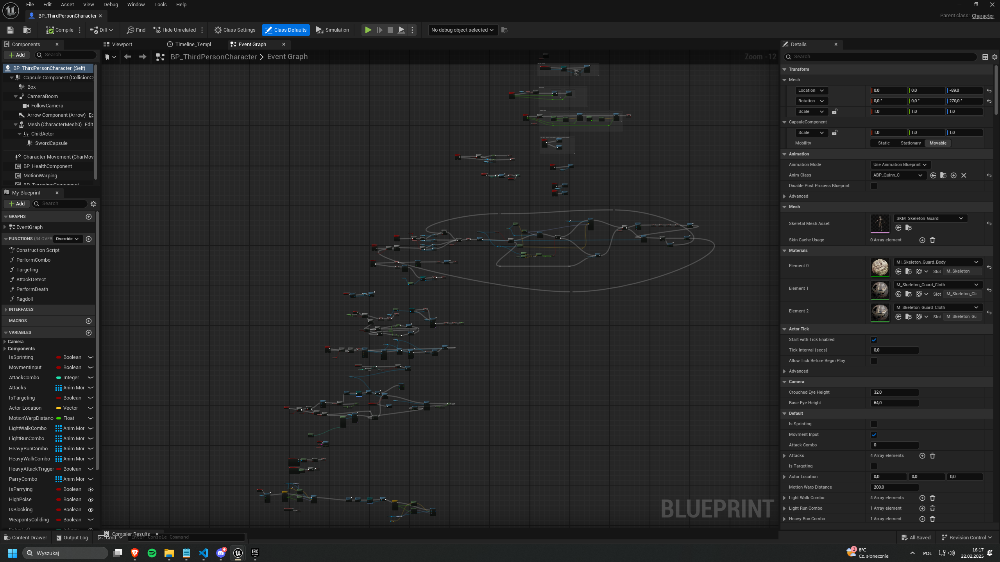
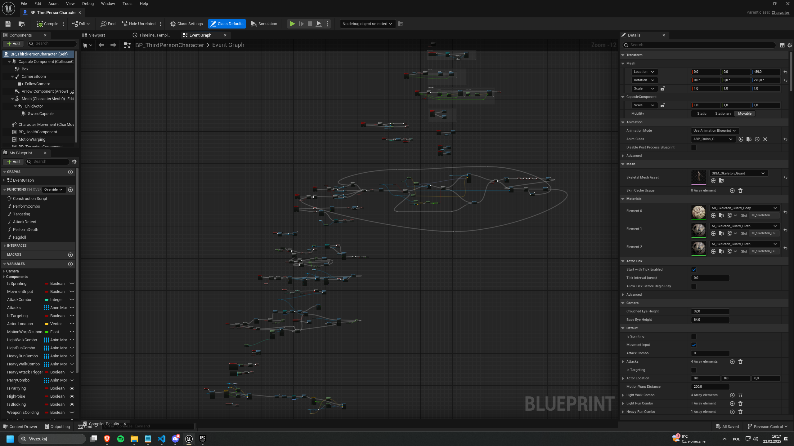

Project Description
In this project, I recreated the core combat mechanics from Sekiro: Shadows Die Twice, including precise parrying and stance mechanics. I focused on replicating FromSoftware’s design principles, such as hyper armor (stance increase) at specific animation frames and movement queueing for responsive combat interactions. Additionally, I implemented animations and developed the system based on a diagram I created. The diagram, visible in the first image, consists of two parts: the left side illustrates the character’s animations and states (jumping, sprinting, walking, etc.) and their transitions; the right side presents a simplified behavior tree, which I am implementing in this project.
Gallery

 
